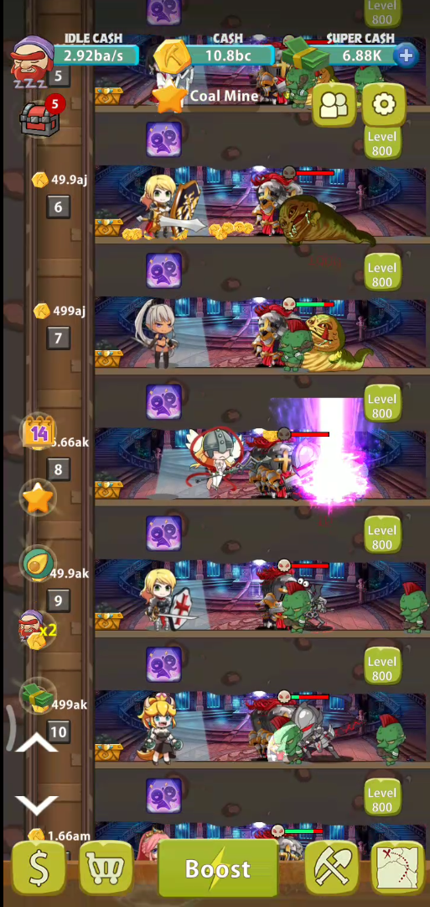
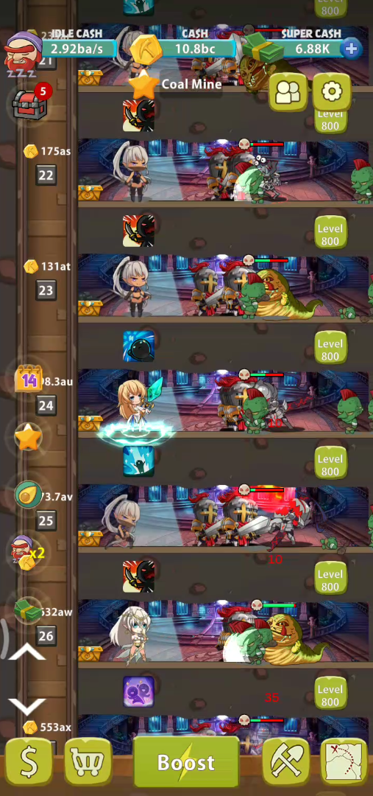
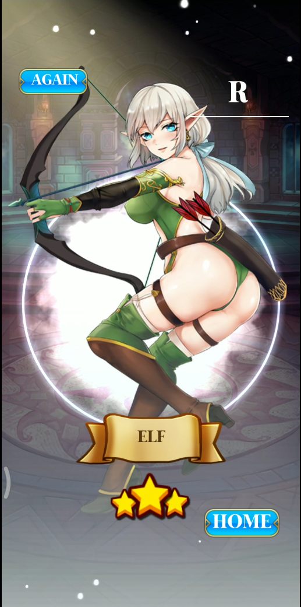
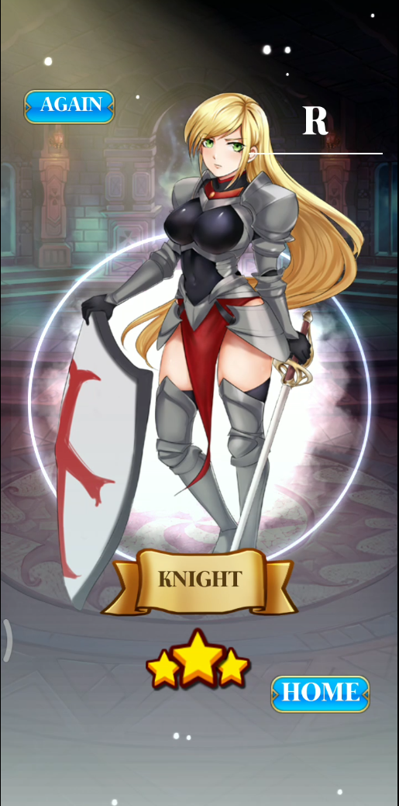
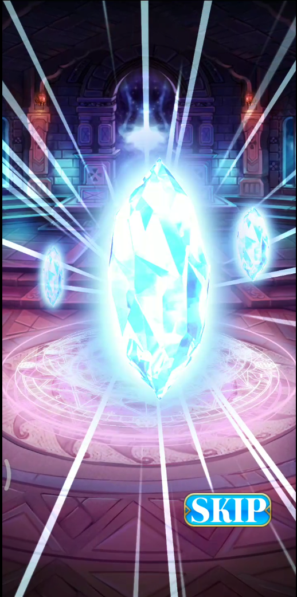
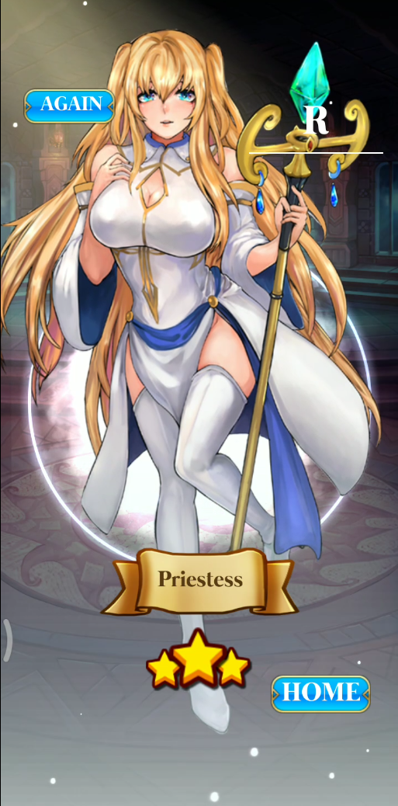
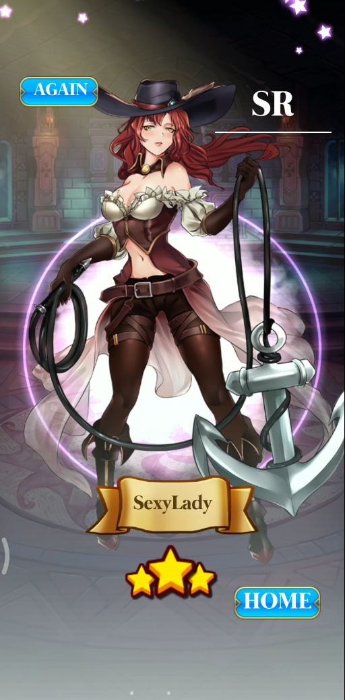
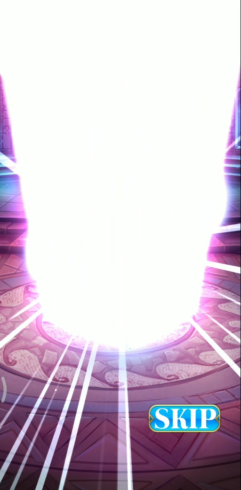
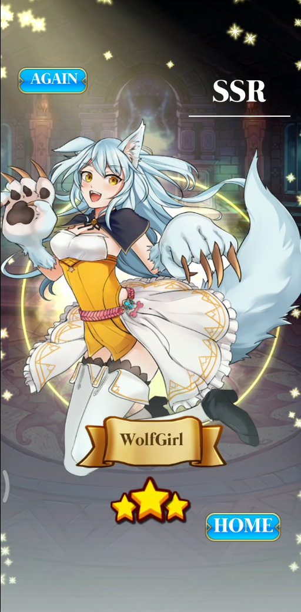
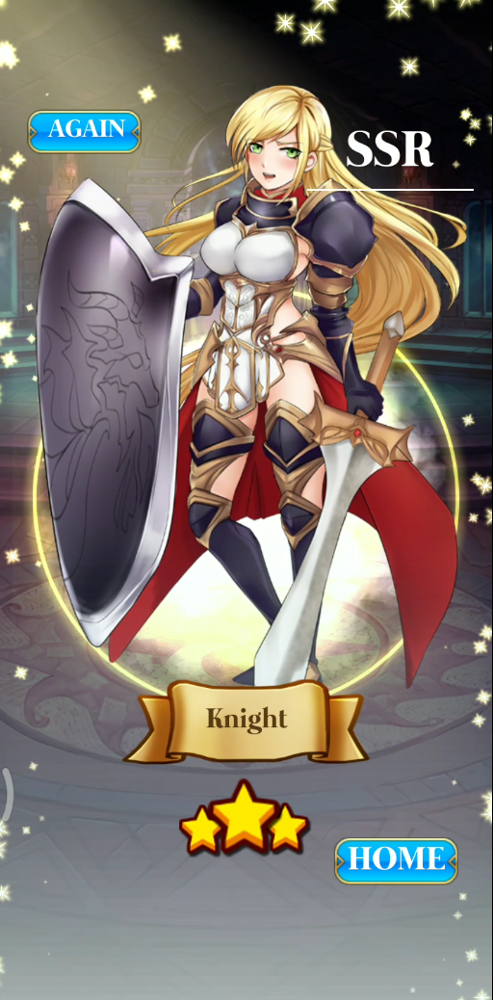

← Back to selected work
Game development / Android, iOS
Goblin Idle Game
A mobile idle adventure about sending adventurers into goblin dungeons in search of treasure.

Project overview
This project is a casual idle game, send your adventurers to goblin's dungeon to hunt the treasures.
A closer look
Project gallery.
Explore screenshots, footage and project details.
Play video / demo / 01Play video / demo / 02 View image / 03
View image / 03

View image / 04

View image / 05

View image / 06

View image / 07

View image / 08

View image / 09

View image / 10

View image / 11View image / 12


View image / 13

View image / 14